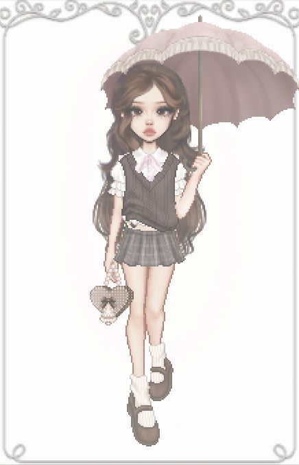

-
Sabrina
Conheça a adorável Sabrina, a boneca encantadora que cativa todos ao seu redor com sua aura delicada e perfume de rosas. Com seus olhos brilhantes e sorriso caloroso, Sabrina é como um raio de sol em um dia chuvoso. Sua presença acalma os corações inquietos e traz um brilho de alegria aos olhos de todos os que a encontram.
-

Jolie
Conheça a encantadora Jolie, uma boneca cheia de estilo e personalidade, que carrega consigo um guarda-chuva único e estiloso, capaz de espalhar alegria por onde passa. Com seus cabelos cacheados como os raios do sol e olhos que brilham como estrelas, Jolie é uma visão de beleza e elegância.
-
Angel
Conheça Angel, uma boneca tímida e delicada que carrega consigo um aura de serenidade e pureza. Com seus olhos doces e expressão gentil, Angel é como um anjo que desceu dos céus para espalhar amor e bondade pelo mundo.
-
Belle
Belle é uma alma gentil e generosa, sempre pronta para estender a mão e ajudar aqueles que precisam. Seja consolando um amigo, cuidando de um animal ferido ou alegrando o dia de alguém com um buquê de rosas, Belle está sempre disposta espalhar amor e felicidade pelo mundo.